HomeGarden
Angular 22 · Frontend Architecture & Product Demo
Lead / Principal Frontend Engineering Case
A simple domain on a hostile backend
- Users manage their gardens and plants — full CRUD
- One business rule: Σ plant surface ≤ garden surface
- Humidity targets per garden, ideal humidity per plant
- Production-quality frontend thinking, not a demo
The provided API is Fastify + SQLite with Swagger docs and a Bruno collection.
added latency on every request
of requests fail with a random 500
of 3-request screens fail with no strategy
The real brief
Make an unreliable backend feel calm and trustworthy — without ever lying about the data.
A complete product, not a CRUD screen
Profiles
Select or create; duplicate e-mail recovery; edit, switch, sign out, delete.
Dashboard
Control center: KPIs, attention list by severity, garden health.
Gardens
Search, sort, create with presets, edit, delete with confirmation.
Plants
27-plant catalog ranked for the garden; live capacity meter; custom plants.
Garden Planner
Area-honest visual twin: arrange, inspect, zones, timeline.
Async UX
Skeleton-first loading, mutation ghosts, zero spinners.
Resilience
Jittered retry, SWR cache, request dedup, race guards.
Inclusive
WCAG 2.2 AA target, keyboard planner, 375 px phones, dark theme.
Every dependency had to earn its place
- Angular 22.1 — standalone, zoneless, OnPush
- TypeScript 6.0 app · 5.9 tooling
- Signals + NgRx SignalStore 22
- RxJS 7.8 — HTTP retry, one fan-out
- Angular Material 22 (M3) + CDK
- SCSS design tokens · self-hosted fonts
- Vitest 4 + jsdom (unit & component)
- Playwright 1.63 + axe-core
- Nx 22 monorepo · ESLint 9 · Prettier
- GitHub Actions: lint · typecheck · tests · build · Playwright
- Provided Fastify 5 · zod · Kysely/SQLite
- Swagger / OpenAPI · Bruno (16 requests)
Dependencies only point down
SignalStore
- Design tokens · light & dark
- One skeleton engine
- Shared UI primitives
- Global error handler + toasts
Three rules
- Components read signals, call intents
- Domain imports no Angular
- The renderer never owns business state
Boundaries you can see in the tree
apps/ ├─ web/src/app/ │ ├─ core/ api · auth · config · errors │ │ http · layout · logging · resilience │ ├─ state/ app-wide SignalStores │ ├─ domain/ business rules & maths · catalog │ ├─ features/ onboarding · dashboard · gardens │ │ garden-detail/garden-map · profile · not-found │ └─ shared/ui/ one folder per component ├─ web-e2e/src/ integration · mocked └─ api/ provided Fastify backend docs/ adr ×7 · architecture · design · presentation bruno/ · tools/check-no-spinners.mjs
core
App-wide singletons: API clients, session, the HTTP pipeline, the cache, error handling.
shared
Reusable UI and pure functions — the business rules, testable without TestBed.
features
Routed screens, each owning its components and, where it needs one, its store.
Modern APIs, each for a reason
Change detection follows signals. zone.js isn't installed.
Every component renders from data, not from events.
0 NgModules, 0 constructor DI — explicit dependencies.
Typed contracts; map ↔ table selection is one two-way model.
Derive, don't sync. Effects only bridge to the outside world.
The planner camera re-fits on resize but keeps a user's zoom.
The planner ships as its own lazy chunk behind a matching skeleton.
Lazy routes, route params as inputs, view transitions.
httpResource and Signal Forms — a tested SWR cache and typed Reactive Forms already solve these here; both are clean future migrations.
Four kinds of state, never mixed
API
typed DTOs
QueryCache
SWR 30 s · in-flight dedup
Source state
SignalStores: gardens, plants by garden
computed
used · free · occupancy · drift
Components
OnPush views
Planner
pure layout → view model
- gardens · garden
- plants — one owner
- server-confirmed only
- used · free area
- occupancy · status
- humidity drift · insights
- never stored
- camera · layers
- selection (model)
- timeline · drag
- table sort
- status per request
- saving = single-flight
- pending updates / deletes
- pending create area
Why SignalStore, not classic NgRx: structure and testability without actions, reducers and effects for every interaction. The detail store is component-provided — it lives and dies with the page.
One rule, one function, everywhere
wouldOvercrowd(garden, plants, requested, excludePlantId)
otherArea + requested > garden.totalSurfaceArea
- Mirrors the server's strict > — a garden can be exactly 100% full
- Editing a plant excludes its own area
- The client prevents; the server decides — a 400 lands inline, input kept
- Garden edit warns before shrinking below what's planted
+ 1 m² plant → blocked · only 0.5 m² free
Measure the contract, then design for it
Store intent
createPlant(…)
Typed API class
Promise + DTO mapping
Interceptors
base URL · retry 5xx / network
/api proxy
same-origin
Fastify + zod
Swagger at /docs
median
p95
failed
- missing garden's plants → 400, not 404
- error bodies normalised once
- 409 e-mail → continue as that profile
- technical 5xx · network → retry, then retry UI
- functional 4xx → inline message
- not-found 404 → designed page
One additive backend change (ADR-003): targetHumidityLevel — migration, zod 0–100, default 50 so existing rows stay valid.
Pending is part of the design
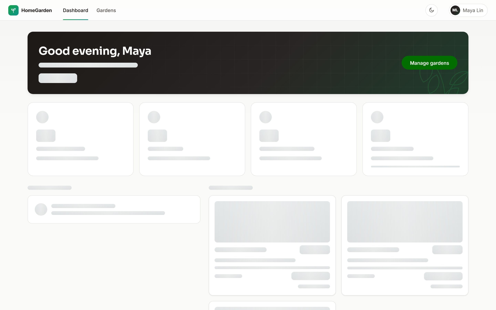
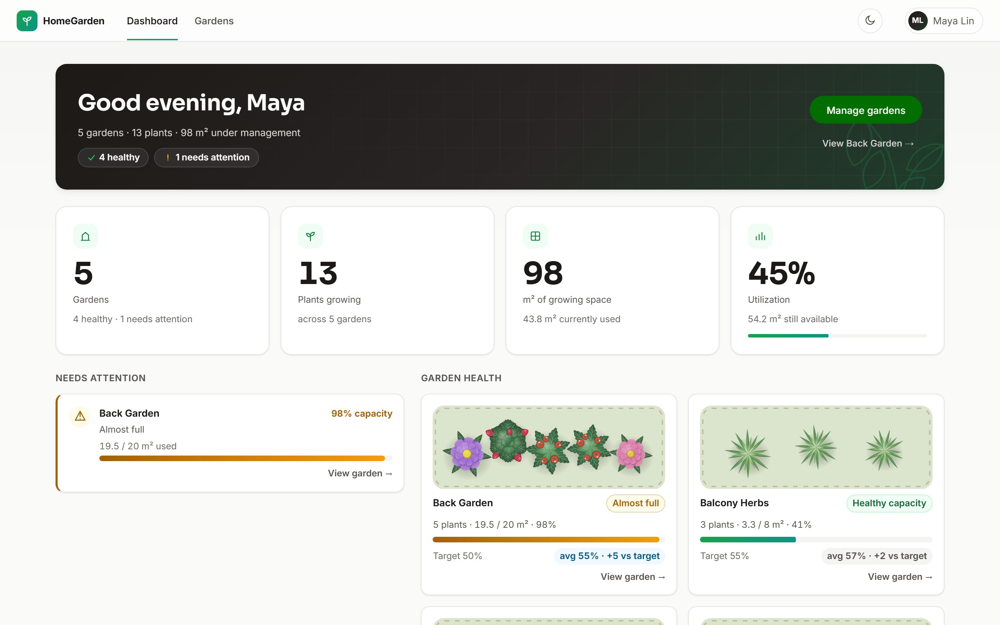
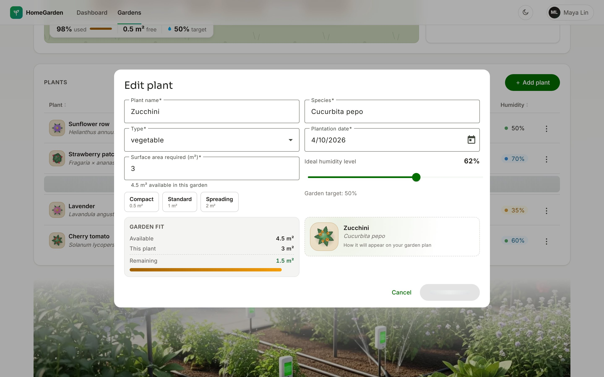
| Verb | Feedback |
|---|---|
| GET · cold | content-shaped skeleton, appears after 150 ms |
| GET · refresh | stale content stays readable (SWR) |
| POST | creation ghost where it will land |
| PUT | only that row · card · bed grays out |
| DELETE | stays a ghost until the server confirms |
Designed for more than the happy path
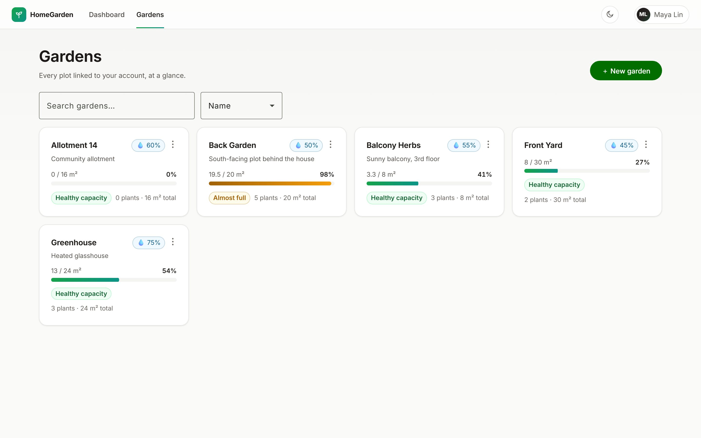
Content, with numbers that only change once the server confirms.
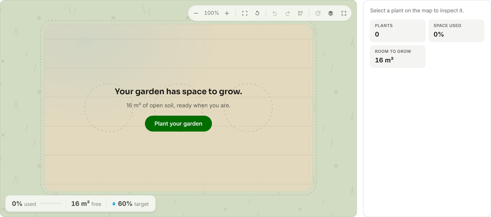
Designed invitations — "Your garden has space to grow."
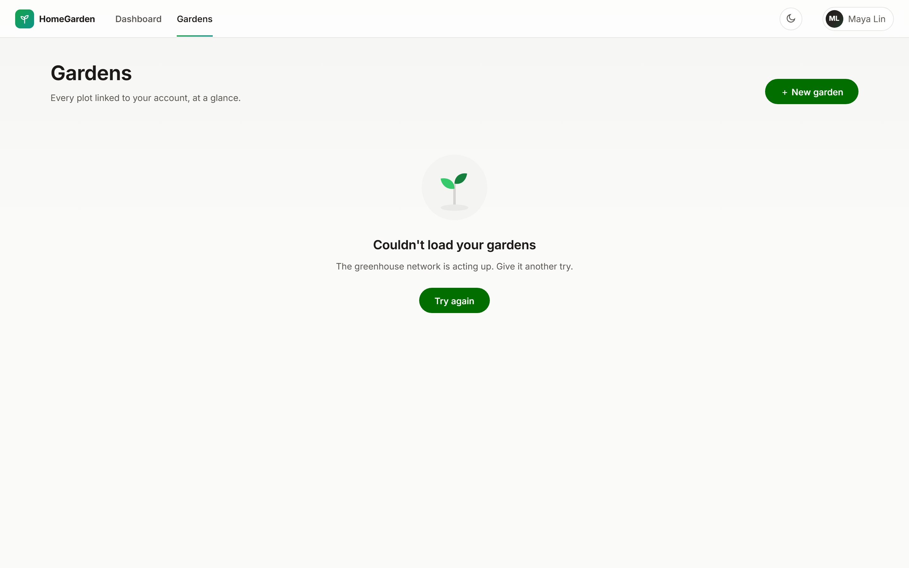
Specific states: Try again for failures, a real page for 404s.
Recovery ladder
retry → stale cache → real item back + Try again toast
A failed create keeps the dialog and input. A 500 never ends a session — only a 404 does.
"Which garden needs me?" — answered first
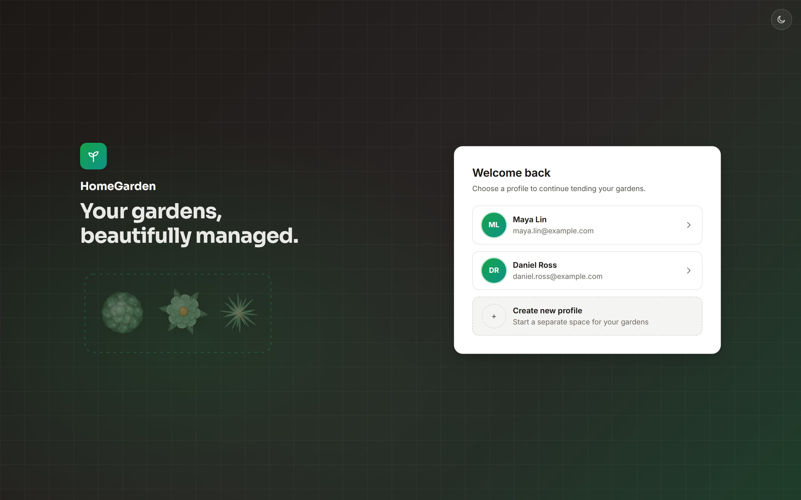
Welcome — pick a profile or create one inline; a duplicate e-mail offers "continue as".
Dashboard — KPIs, attention sorted by severity, health cards with botanical previews. All derived.
Manage every plot at a glance
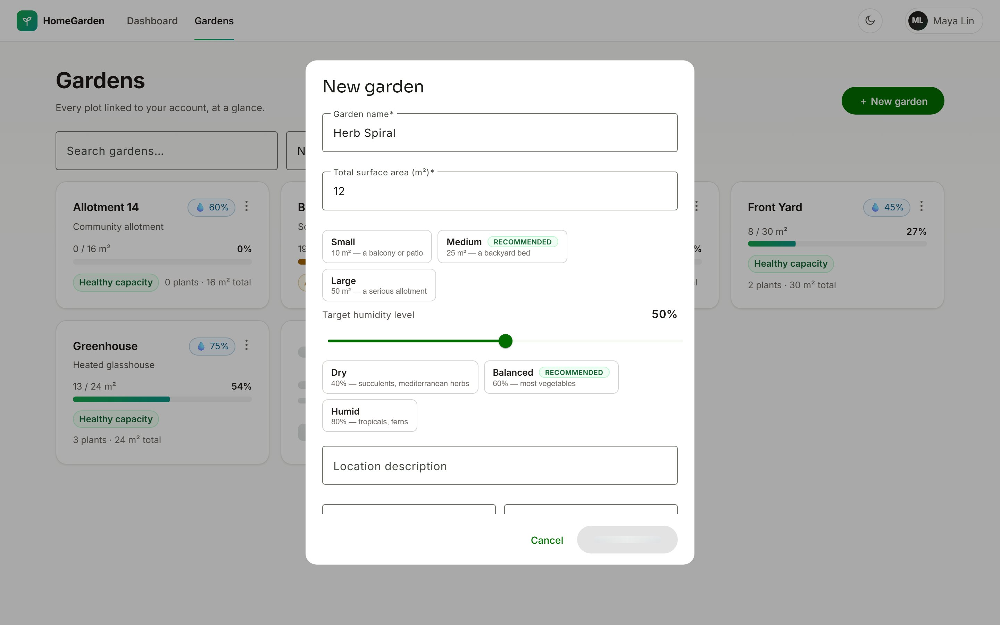
- Search by name or location; sort by name, size or utilization — remembered
- Size & humidity presets; validated forms
- Delete → confirm → ghost until confirmed
- Hover or focus prefetches the detail page
Recommend, pre-fill — and stop what won't fit
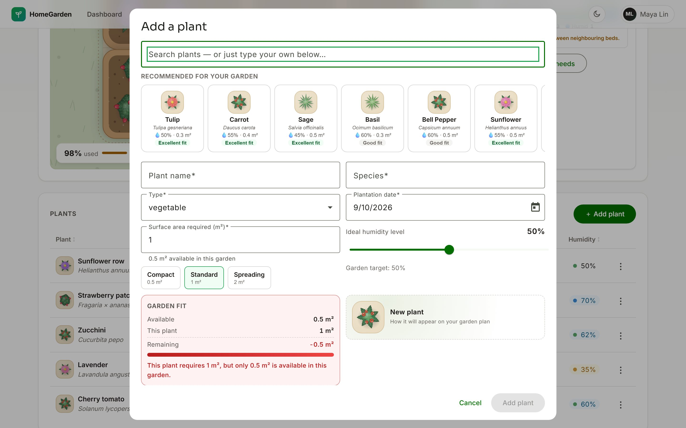
- Local catalog of 27 plants, ranked for this garden: humidity match · fits free area · not yet planted
- One click pre-fills — every field stays editable, custom plants welcome
- Area presets 0.5 · 1 · 2 m²
- Live Garden fit blocks before the server has to
- Preview uses the planner's own artwork
Recommendations are suggestions, not business truth — the capacity rule and the server decide.
Capacity you can see
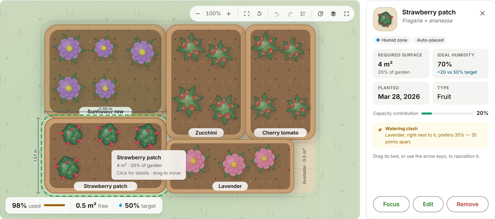
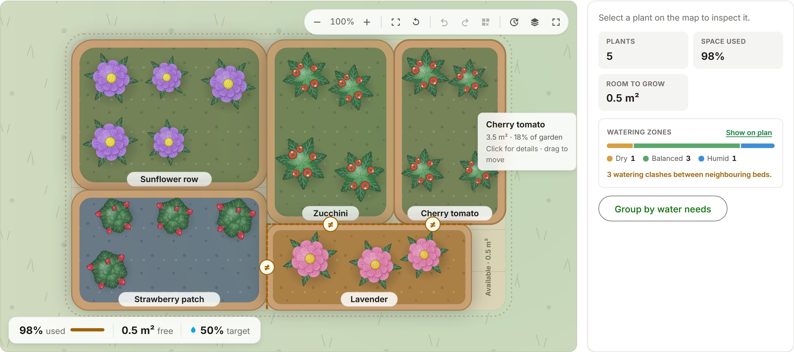
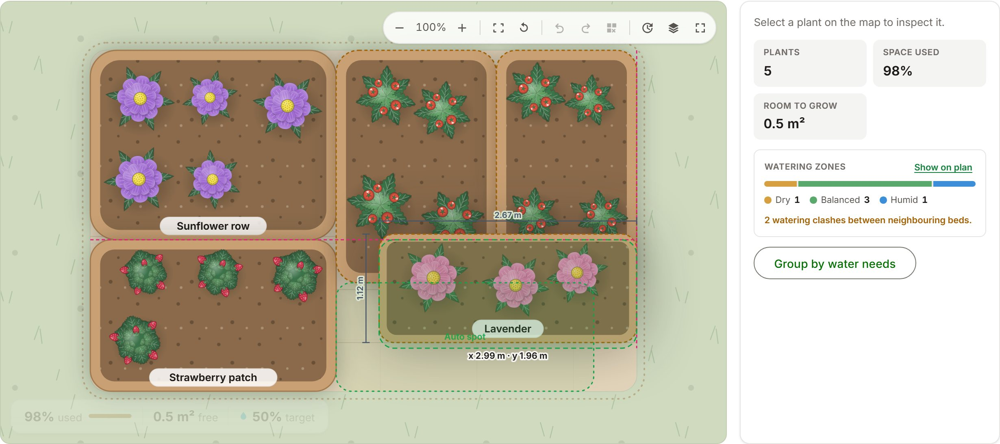
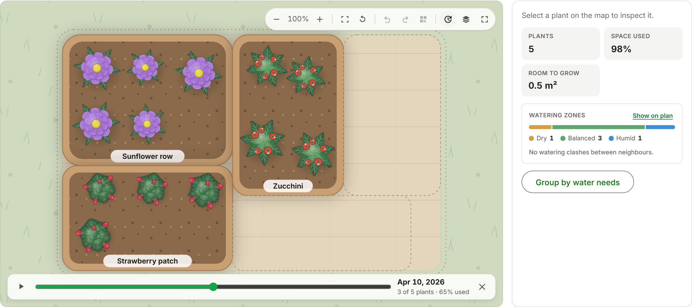
Area-honest beds · pan, zoom, fit · layers · fullscreen · selection synced with the table
Drag with magnetic edges, guides and a home magnet · keyboard moves · undo / redo · layout remembered
Watering zones · neighbour clashes · group by water needs · planting timeline
Positions are visual preference — moving a bed never changes capacity or calls the API.
A pure pipeline, rendered as SVG
Store state
garden + plants
Treemap layout
pure · deterministic · drawn m² = real m²
Positions
clamped overrides · local, versioned
View model
beds · soil · art · labels · camera
SVG + DOM
renderer + inspector
| SVG, rendered by Angular — chosen | PixiJS / WebGL — rejected | |
|---|---|---|
| Bundle | no rendering library · whole planner chunk 19 kB over the wire | ~100–140 kB library before app code |
| Accessibility | real focusable beds, labels, keyboard | needs a parallel a11y layer |
| Theming | CSS tokens — dark mode for free | colours re-implemented in JS |
| Testing | jsdom + Playwright selectors | pixel / visual testing |
| Sweet spot | tens to hundreds of shapes | thousands of animated sprites |
Revisit if the planner grows to thousands of animated entities — the pure view model means only the renderer would change.
Three minutes in the real app
- Welcome — choose a profile
- Dashboard — the garden that needs attention
- Garden Detail — header, plan, plant table
- Select a bed — inspector, zone, clash note
- Drag a bed — guides, readout, snap home, undo
- Layers — watering zones
- Add plant — recommendations, capacity blocks
- Edit a plant — mutation ghost, numbers on confirm
- Fullscreen / timeline — if time allows
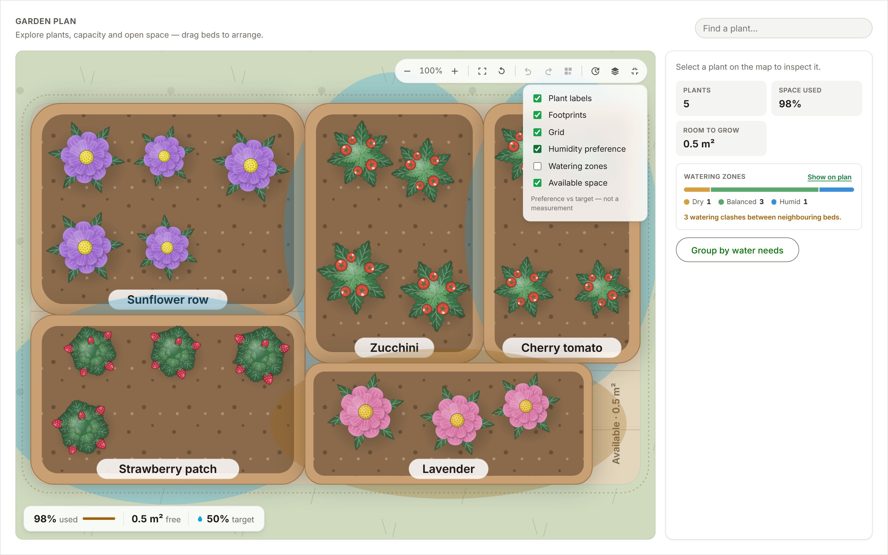
Fallback: if the environment misbehaves, slides S13–S17 carry the same flow.
Perceived speed ≠ actual speed
Honest edges: initial sits just under its 500 kB raw warning budget; the planner stylesheet is 13.4 kB against a 12 kB warning (16 kB error).
- skeleton after 150 ms — no flash
- mutation ghosts, no blocking
- no layout shift when data lands
- fresh cache (< 30 s) = 0 requests
- identical in-flight GETs deduplicated
- hover / focus prefetch
- lazy routes · @defer · SVG art
- one lazy WebP photo (75 / 237 kB)
Usable by keyboard, on a phone, in the dark
- Target: WCAG 2.2 AA · skip link · visible focus everywhere
- Dialogs trap and return focus (CDK)
- Real table · sortable headers with aria-sort
- Planner beds are buttons: select, move with arrows, Home to reset — announced
- Loading regions: role=status + aria-busy
- Reduced motion everywhere — timeline won't auto-play
- Status never by colour alone · axe in the suite
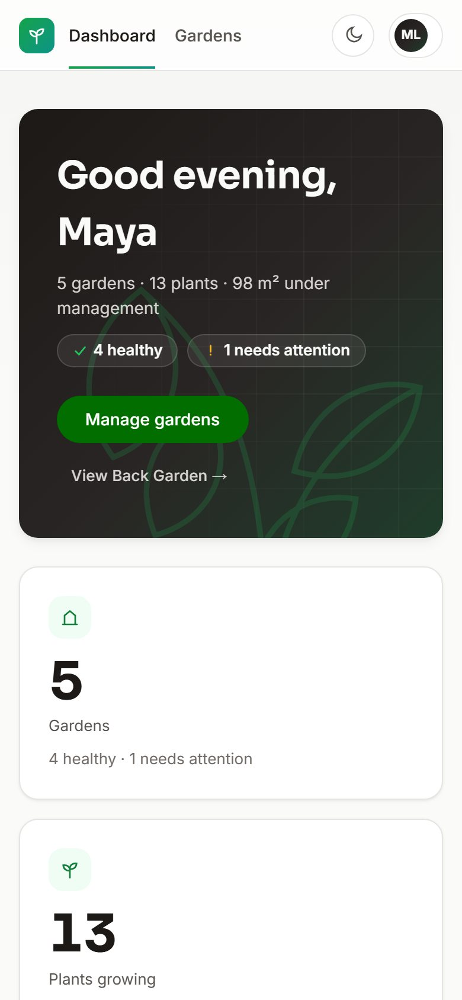
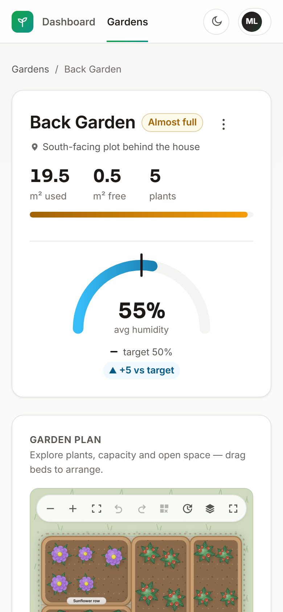
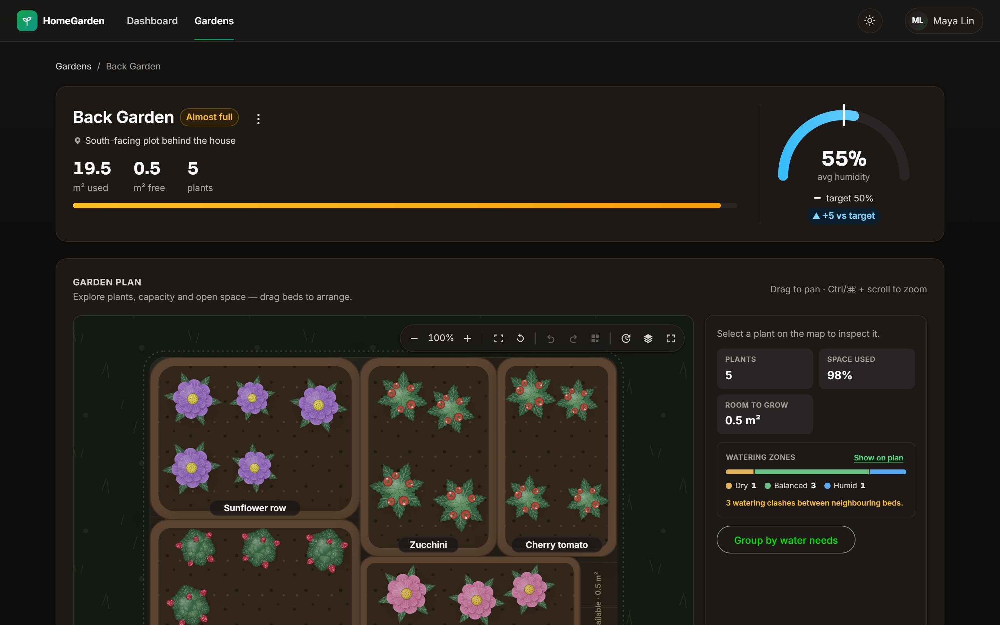
Each layer proves something different
Real backend
core flows, real flaky API
Playwright · mocked network
latency, failures, ghosts, planner, 375 px
Stores & components
races, single-flight, all four UI states
Pure domain & infrastructure
capacity rule, layout, camera, cache, retry
815 web + 31 API Vitest tests across the base layers
- capacity boundary + edit self-exclusion
- a stale response never overwrites a fresh one
- three clicks → one POST
- retry never retries a 4xx
- slow GET → skeleton; writes → ghosts → recovery
- planner: drag stays inside the fence, keyboard moves
- 375 px: no horizontal overflow
Mocked = deterministic states the random backend can't guarantee. Integration = the real contract. 95% coverage gate configured; Playwright not yet in CI.
Built like it ships
| Development | Production | |
|---|---|---|
| Compile | dev server, fast rebuilds | AOT · optimized · hashed |
| Source maps | on | off — 0 .map files shipped |
| API | /api → proxy → :3000 | /api same-origin, reverse proxy |
| Budgets | — | initial 500 / 600 kB · styles 12 / 16 kB |
| Licenses | — | extracted |
- One API base URL via config + interceptor
- SPA fallback & cache headers documented
- No secrets in the repository
- CI: lint · typecheck · unit · build · no-spinner guard
CSP and security headers — they belong to the hosting layer.
What I left out — and what comes next
- SSR — a signed-in management app, no SEO value
- Classic NgRx — ceremony without a problem to solve
- PixiJS / WebGL — SVG fits tens of beds
- A query library — a ~120-line SWR cache is enough
- Fake security — a profile session, plus a real design
- Auth: OIDC via a BFF, httpOnly cookie session
- Idempotency keys; retries only where safe
- Backend: paging and user scoping, ETag revalidation
- Observability: errors + Web Vitals behind the logger seam
- Security headers, server-side planner layouts
Thank you.
Questions?
A complete garden manager with a planner that makes capacity visible.
Layered, signal-driven, resilient against a backend that fails on purpose.
One rule, one owner, derived state, honest pending states.
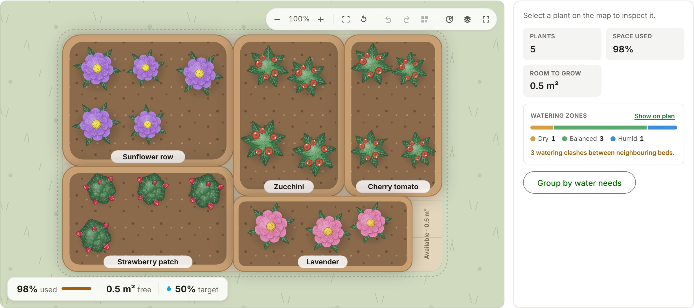
One GET, through every layer
- Component reads a store signal; the route input triggers store.load(id)
- QueryCache: fresh → return · stale → return + revalidate · miss → fetch
- Miss: status loading → SkeletonGroup shows the ghost after 150 ms
- Typed API class → requestAsPromise → HttpClient (withFetch)
- Interceptors: base URL, then retry 5xx / network with full jitter
- DTO mapped → cache written → patchState (stale tokens dropped)
- computed recalculates → OnPush view renders the content
toApiError → technical · functional · not-found. The store sets its status; the global handler shows technical errors as toasts.
Monotonic load tokens · cache write versions · single-flight saving · per-entity pending sets.
How the API misbehaves — exactly
| Behaviour | Mechanism |
|---|---|
| Latency | onSend hook · uniform 200–2000 ms · skips /docs |
| Failures | onRequest hook · 10% → 500 · before any handler runs |
| Switch | hard-coded on — no environment flag |
| Routes | 17 — gardens · plants · users |
| Docs | Swagger UI at /docs, generated from zod |
| No retry | 3 retries | |
|---|---|---|
| 1 request | 10% | 0.01% |
| 3-request screen | 27.1% | 0.03% |
Retrying writes is safe only because failures are injected before handlers. Production answer: idempotency keys.
Three stores, three scopes
| Store | Scope | Owns | Notable |
|---|---|---|---|
| GardensStore | root | gardens · status · saving · pending sets · query / sort | SWR load · list view persisted · ghost-confirmed delete |
| PlantsIndexStore | root | plants by garden · failed flags | single plant owner · rxMethod fan-out with distinctUntilChanged |
| GardenDetailStore | component | garden · statuses · pending create area · last created id | plants = computed view of the index · load tokens · usedArea, freeArea, occupancy, drift |
Pessimistic writes with ghost UI; deletes leave only after the server confirms.
Two in the app: route id → load, and the document title.
Session, Theme and Toast stores — plain signals, no store library.
Concern → layer → proof
| Concern | Layer | Where |
|---|---|---|
| Capacity rule & area honesty | Vitest · pure | garden-insights, garden-map-layout specs |
| Planner tools | Vitest · pure + component | garden-planner, garden-map-planner, map-inspector specs |
| SWR, dedup, retry, error mapping | Vitest · infrastructure | query-cache, interceptor specs |
| Races, single-flight, ghosts | Vitest · stores | garden-detail-store, gardens-store specs |
| Slow GET, failures, recovery | Playwright · mocked | async-states, mutation-ghosts, contract-resilience |
| No redundant requests | Playwright · mocked | request-ownership |
| Planner, responsive, a11y | Playwright · mocked | garden-map, garden-planner, responsive, accessibility |
| End-to-end contract | Playwright · real API | garden-workflows (6 flows) |
Measured on the final production build
| File | Raw | Est. transfer |
|---|---|---|
| Initial total | 498.2 kB | 133.1 kB |
| └ main | 195.1 kB | 46.9 kB |
| └ styles | 20.5 kB | 4.2 kB |
| garden-detail (lazy) | 186.6 kB | 38.8 kB |
| garden-map (@defer) | 82.6 kB | 19.4 kB |
| dashboard · onboarding · garden-list | 35.8 · 20.9 · 15.0 | 8.5 · 5.7 · 4.5 |
| profile-dialog (on demand) | 4.8 kB | 1.9 kB |
- cache fresh for 30 s
- skeleton appears after 150 ms
- retry caps 250 / 750 / 2250 ms, jittered
Initial 500 kB warn / 600 kB error. Component styles 12 / 16 kB — the planner stylesheet warns at 13.4 kB.
From case study to product
- OIDC + BFF, httpOnly session
- owner-scoped data
- idempotency keys
- CSP & security headers
- WebKit run as a merge gate
- error tracking behind the Logger seam
- Web Vitals & tracing
- private source-map upload
- paging and user scoping
- ETag revalidation
- server-side planner layouts
- external plant catalog via the provider seam